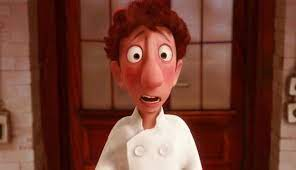
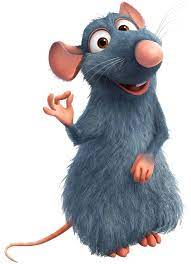
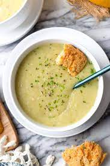
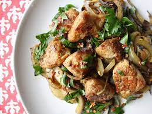
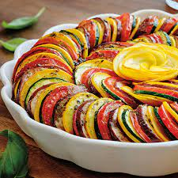
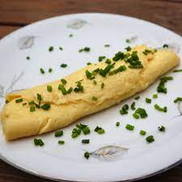
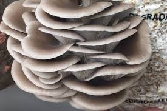

About
After the closure of the world-class restaurant Gusteau’s, head chefs Colette Tatou and Alfredo Linguini-Gusteau, along with a private collaborator who prefers to be known only as The Little Chef, founded a new bistro in the heart of Paris where they continue to produce new culinary creations. La Ratatouille is proudly supported by renowned food critic Anton Ego.
Alfredo Linguini-Gusteau

Linguini is the only son of celebrated chef Auguste Gusteau and Renata Linguini. Full of false modesty,
he insists that he has no talent at all, and is no good with food or words. Once the drawcard of Gusteau’s restaurant,
he now manages the front-of-house, and has been known to wait tables whilst wearing roller-skates.
Colette Tatou
The toughest cook in the kitchen, chef Tatou has worked long and hard to penetrate the cutthroat world of
French haute cuisine, becoming the only female chef at Gusteau’s. She is a firm believer in Gusteau’s motto, “Anyone can cook”,
and has committed all of his recipes to heart.
The little chef

The artist behind several of La Ratatouille’s signature dishes, The Little Chef prefers to remain unidentified,
so that aspiring creators everywhere can imagine themselves in The Little Chef’s position, having risen from unbelievably humble origins.
There are rumours that The Little Chef is actually the rat depicted by La Ratatouille’s signage, but customers can
be sure that no two-dimensional black rats work at La Ratatouille, and our staff are fully compliant with all hygiene laws and health and safety regulations.
Tomato, Leek & Potato Soup

A fresh twist on an old classic, this soup was first created when Linguini was merely a plongeur at Gusteau’s, and he found himself having to improvise
after knocking over a cauldron. Famously reviewed by Solene LeClaire, this is the soup that started it all.
Sweetbreads Special

A forgotten favourite of Chef Auguste Gusteau, this complicated mélange of veal stomach, seaweed and cuttlefish is a fresh surprise from an old master.
Ratatouille Confit Byaldi

This traditional peasant’s dish is guaranteed to instantly transport you to the nostalgic days of your childhood and rekindle your passion for a good meal.
A favourite of critic and patron Anton Ego. One can never get too familiar with vegetables!
Classic Omelette

An homage to the first meal shared between Linguini and The Little Chef, this dish serves as a reminder that sometimes trust is rewarded.
Lightning Mushrooms

A world first, these chanterelle mushrooms are caked in tomme de chèvre du pays (valley goat’s cheese) and tied together with rosemary and saffron.
The mushrooms are then cooked with a unique method that creates a popping, zapping sensation in the mouth. Seasonal. Not a dish to be attempted at home!
Strawberry Cheesecake Sensation

The creamy, salty-sweet, oaky nuttiness of the cheese combines with the sweet, crisp flavour of strawberries and grapes, with a slight tang on the finish,
to conjure a sense of the infinite discoveries to be made by stopping to savour the world around you.
Freshly Baked Bread Selection

How do you tell how good bread is without tasting it? Not by the smell, not by the look, but by the sound of the crust. Oh, symphony of crackle! Only great bread sounds this way.
1 / 3
Last night, I experienced something new: an extraordinary meal from a singularly unexpected source. To say that both the meal and its maker have challenged
my preconceptions about fine cooking is a gross understatement. They have rocked me to my core.
-Anton Ego
2 / 3
The soup was a revelation! A spicy yet subtle taste experience.
-Solene LeClaire
3 / 3
Events and Functions
Contact us today to book a reservation at La Ratatouille. We have experience catering for large families. Share your next celebration with us!
❮
❯